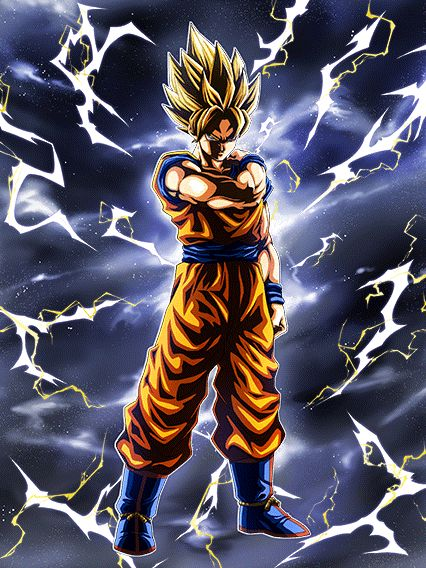
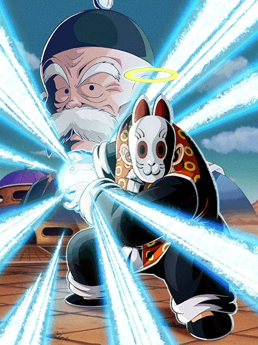
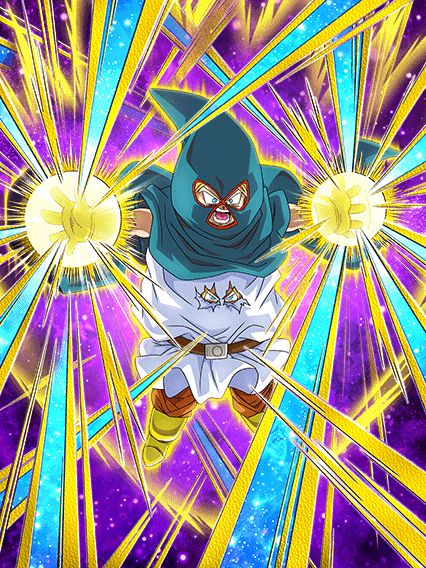
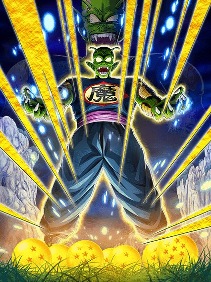

A primeira celebração pós-sync.
O hype vai estar bem baixo depois da WWC, então é só uma celebração genérica
A primeira celebração pós-sync.
O hype vai estar bem baixo depois da WWC, então é só uma celebração genérica
A melhor e pior ideia ao mesmo tempo.
Vamo lá, a "Unificação dos Cronogramas de Operação" foi anunciada na WWC de 2023, e foi concluída exatamente 1 ano depois
E nesse período de um ano, nós presenciamos decisões estranhas e, no mínimo, bizarras.
Quase NENHUM esforço foi feito por essencialmente 6 meses desde o anúncio da Sync, onde o Global manteve o período de banners irrelevantes igual e não aparentava nem estar tentando alcançar os dois jogos
Além disso, o Global teve a incrível ideia de lançar o DESASTRE que foi o Goku Black PHY como um "Global-First" com metade da celebração faltando 💀
E o que eu considero mais ridículo..

UM BANNER FILLER ENQUANTO TÃO TENTANDO JUNTAR OS JOGOS
O mais absurdo é que nessa época tinha acabado de lançar o Ginyu LR.. sabe quanto que adiantaria a Sync se ele simplesmente fosse lançado em ambos Global e JP ao mesmo tempo?
Eu não quero nem comentar sobre o desastre que foi o mês de agosto..
10 LRs e mais um TUR EM TRÊS MESES
Ao invés de tudo isso, eles podiam:
- Ter adiantado o tempo de vários banners que sabemos MUITO BEM que não renderam nada, como o Super Trunks TEQ
- Deixar o Goku Black PHY pra lançar no momento certo com o Cell Max, e não do jeito ridículo q foi
- Lançar o Goku UI TEQ e Jiren AGL antes do Aniversário pra evitar mais caos após ele
Só isso já adiantaria o andamento dos banners, evitaria o desastre de Agosto onde todo mundo ficou sem Dragon Stones, e estariamos unidos antes mesmo da WWC começar
A Sync é obviamente uma coisa ótima pro futuro do Dokkan, mas slk, ela foi administrada da PIOR forma possível.

Bro é um nuker/orb changer/stacker.
Ele ganha 50% de ATK e DEF por orb pega, muda orbs pra rainbow sempre e stacka 50% de ATK e 20% de DEF no Super Attack
Se ele pegar 1 orb AGL e estiver com mais de 50% de HP, ele ganha 48% de redução de dano e 48% de chance de desvio
E caso ele esteja abaixo de 50% de HP, ele ganha 50% de chance de crítico e mais DEF pro resto da partida.. pq?
Depois de dar 5 ou mais Supers, ele vai mudar TODOS os orbs pra AGL por um turno, tornando ele uma parede e uma bomba nuclear temporariamente
Dando 4 Supers você pode usar a Active Skill dele que aumenta o dano pro resto da partida, o que deixa a nuke mais forte ainda
Bom personagem, mas meio desnecessário considerando todo o dano q já existe em outros times.
Quantos personagens desvia-ou-morre vamos ter ainda esse ano?
Esse cara tem 50% de chance de desvio que aumenta pra 70% quando ele ataca, e se no meio do turno você cair abaixo de 50% de HP, a chance aumenta pra 90%
Se você começar o turno já com menos de 50% de HP, ele vai desviar garantido nesse turno apenas
Ele tem Scouter se tiver um aliado Planet Namek Saga no turno com ele.. e é isso
O dano dele é ruim, a defesa dele é ruim.. é só o desvio mesmo pra salvar esse cara da morte certa
Útil se vc estar com 1% de HP.
Se seu HP cair abaixo de 59% no meio do turno, ele ganha +200% de ATK e DEF e fica super efetivo pro resto da partida
E se cair abaixo de 20% no meio do turno, ele desvia garantido de tudo 1 vez
Vale lembrar que esse cara sobrevive a golpes fatais uma vez por turno e cura 59% de HP se estiver abaixo de 20%
Ele é útil pra condições de HP super chatas, como a do Super Vegetto STR, mas é só isso mesmo.

Ele pode ser útil.
Melhoraram as restrições que esse cara tinha e aumentaram o stack dele de 20% de ATK e DEF pra 50%
A redução de dano dele baseada em pouco HP agora já começa em 30% e só precisa de um Namekians no time
Caso tenha um Piccolo no time, ele dá 50% de ATK e DEF pra todo mundo
E agora ele dá crítico garantido e lança um Super adicional garantido não só se houver um inimigo Wicked Bloodline, mas também se tiver um inimigo Planet Namek Saga
Bom EZA, mas times estão em falta pra ele.
")
Ele quer ficar no slot 1 mas ganha toda a defesa no Super 💀
Esse cara tem 50% de redução de dano que passa a diminuir pra 20% a partir do quinto turno dele, além de ter +30% de redução e 150% de DEF se estiver no slot 1
Pós Super Attack ele tá super mega tranquilo, mas ele tem q tankar o slot 1 primeiro né, e isso pode vir a ser difícil as vezes
Outro problema dele é o fato de ele ter um dano muito alto, mas só se estiver enfrentando um Pure Saiyans e tiver um parceiro de link decente, o que nem sempre é possível
Apesar disso, é um bom Super EZA
Tanka, tem crítico, super efetivo e dá Supers adicionais, muito bom.

O primeiro LR, e agora o primeiro Super EZA F2P.
Ele ganha buffs separados estando no slot 1 ou 3, e ganha ambos no slot 2, sendo +159% de ATK e DEF, 70% de chance de dar um Super adicional e 70% de chance de defesa ativa 💀💀
Ainda assim, pós-super ele consegue estar acima de 1 milhão de defesa, enquanto dá 30% de ATK e DEF pra todos Super Class, ser super efetivo contra inimigos Super Class, e dar crítico garantido infinito contra Extreme Class
Em geral, ele é facilmente o segundo F2P mais forte de todos, só perdendo pro BIO-GOAT Bio-Broly.
")
NÃO espere pra trocar pro Piccolo.
Se esse cara tiver um aliado Planet Namek Saga ou Namekians no turno e estiver no slot 1, ele tem 80% de redução de dano e chance de crítico por 3 turnos
Sabe oq acontece depois desses 3 turnos? Exatamente, morte.
Pra trocar pro Piccolo você precisa estar abaixo de 70% de HP a partir do turno 4 ou só a partir do turno 6
Faça o possível e o impossível pra trocar o mais rápido possível, pq se não der, você se ferra

Agora sim ele é forte.
Esse cara tem 50% de redução de dano e chance de crítico pra sempre, além de lançar um adicional com 70% de chance de ser Super
Se ele estiver abaixo de 70% de HP no começo do turno, ele ganha 50% de chance de desvio pro resto da luta, o que é bem forte
E se estiver acima de 70%, ganha +20% de redução de dano e dá 70% de DEF pra todos aliados Super Class
Por sinal, ambos Gohan e Piccolo stackam 20% de ATK e DEF no Super Attack, o que é legal mas é um stack meio lento
Em geral, um LR decente, mas bem perigoso no começo da luta
Assim que trocar pro Piccolo, tá tudo certo, bom card.
Pularam uns números.
Pra ajudar na sync, esse World Tournament é o n.55 ao invés de 53, só pra ficar certinho com o JP
Sobre os personagens.. uhhhhhhh...
World Tournament complicado esse, tá difícil.

Esse cara não tem crítico, não tem redução de dano e não tem desvio, nada.
Mas.. ele dá um dano bem alto e tem uma defesa "ok" pós-super
Ele até dá 20% de ATK pra todos aliados pro resto da luta e lança um Super Attack adicional se tiver um aliado ou inimigo com um nome que inclua Goku no turno.. mas é só isso
LRs de World Tournament demoram demais pra ficarem rainbow.. o que significa que eles envelhecem rápido demais.

Eu sinceramente não sei como eles aprovaram isso.
Esse cara quer de algum jeito estar no slot 1 pra ter 70% de chance de stun e lançar um adicional com 50% de chance de ser super
Ele até tem 50% de chance de desvio.. NOS SLOTS 2 OU 3
Design intankavel, muito ruim mano KKKKKK

Builde ele pra morrer do mesmo jeito.
Esse cara é uma boa definição de "propaganda enganosa"
Ele te faz pensar que ele é decente por buildar 40% de redução de dano levando 4 golpes e ter defesa ativa, mas a defesa dele é bem podre, então ele não vai tankar nada
É apenas mais um EZA ruim

FATO: Ter desvio garantido não te faz um bom personagem.
Esse cara tem 1 turno de desvio garantido se estiver abaixo de 60% de HP e tem mais outro turno se estiver abaixo de 30%
Sabe oq ele tem em qualquer outro turno? Nada.
Esse cara é literalmente o EZA do Goku SSJ STR dessa mesma celebração só que pior

Literalmente esqueceram da defesa.
Se você pegar pelo menos 4 orbs, estiver numa rotação toda Extreme Class e estiver nos slots 2 ou 3, esse cara tem 50% de redução de dano e 60% de chance de desvio
Sabe qual o problema? Então.. ele tem 60% de defesa NA PASSIVA INTEIRA
No slot 1 ele tem +100% de DEF mas perde 30% da chance de desvio, sem chance de colocar ele lá
Eu preciso mencionar q ele se transforma no turno 7?

Não, não melhora
As únicas melhorias defensivas dele são ele ter 100% de DEF sempre e a redução de dano aumentar pra 66%
Eu não tô brincando, é só isso
Esse cara tem um dano super explosivo pq ele muda orbs e é um nuker, mas essa defesa é intankavel
Ele não tem time, tem 0 parceiros de link e é completamente dependente da chance de desvio dele, bem chato
O triste é que era um EZA q eu tava aguardando..
É.. difícil
Eu fui muito inocente em achar que cards mais recentes não iam ter EZAs tão zuados..
Você chegou ao fim dessa página!
Bom.. por enquanto né, a celebração tá acontecendo agora e tals..
Obrigado por ler tudo, e fica a vontade pra ver outras